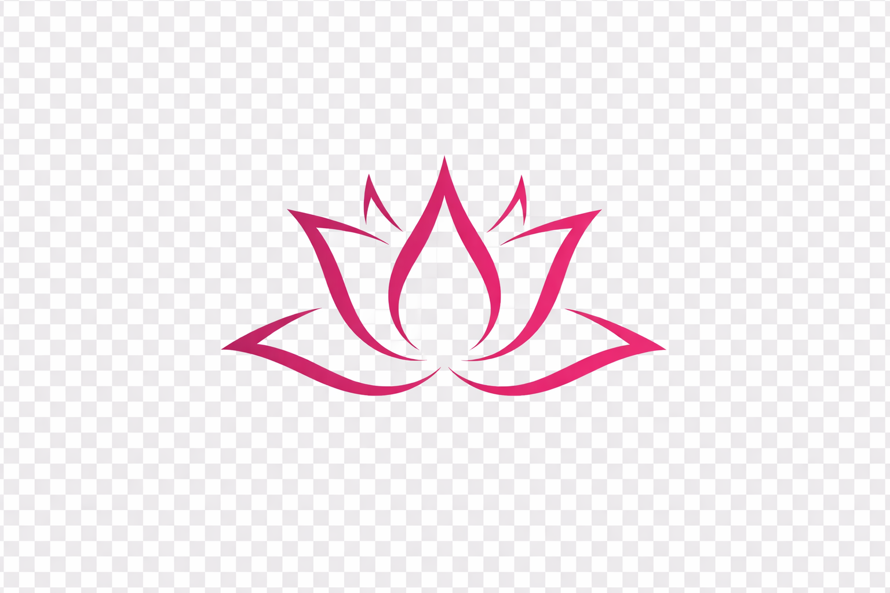
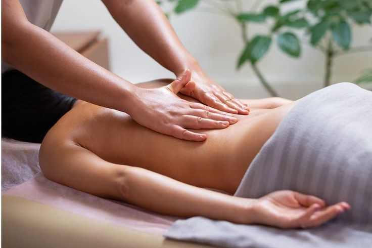
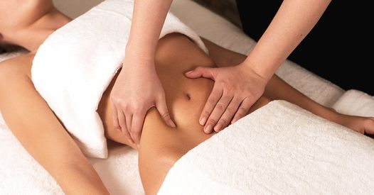
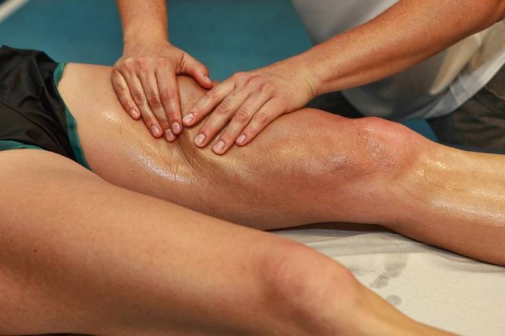
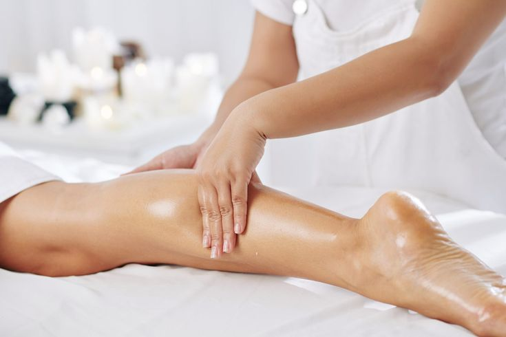

Estética y Bienestar
Bienestar, relajación y salud corporal.

Masaje suave y continuo que ayuda a reducir el estrés, relajar el cuerpo y la mente, mejorar el descanso y generar una sensación profunda de bienestar general.

Masajes que acompañan tratamientos corporales y ayudan a mejorar la apariencia de la piel, favoreciendo la circulación, el bienestar y el cuidado personal.

Ideales para aliviar contracturas, tensiones musculares y sobrecargas físicas. Ayudan a mejorar la movilidad, disminuir molestias y favorecer la recuperación del cuerpo.

Masaje suave que estimula el sistema linfático, ayuda a eliminar líquidos retenidos, mejora la circulación y reduce la inflamación.
A veces no necesitamos más tiempo, necesitamos parar. El masaje es ese momento donde el cuerpo y la mente vuelven a encontrarse.